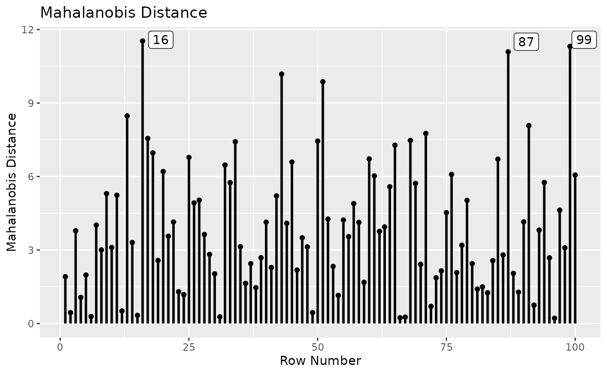
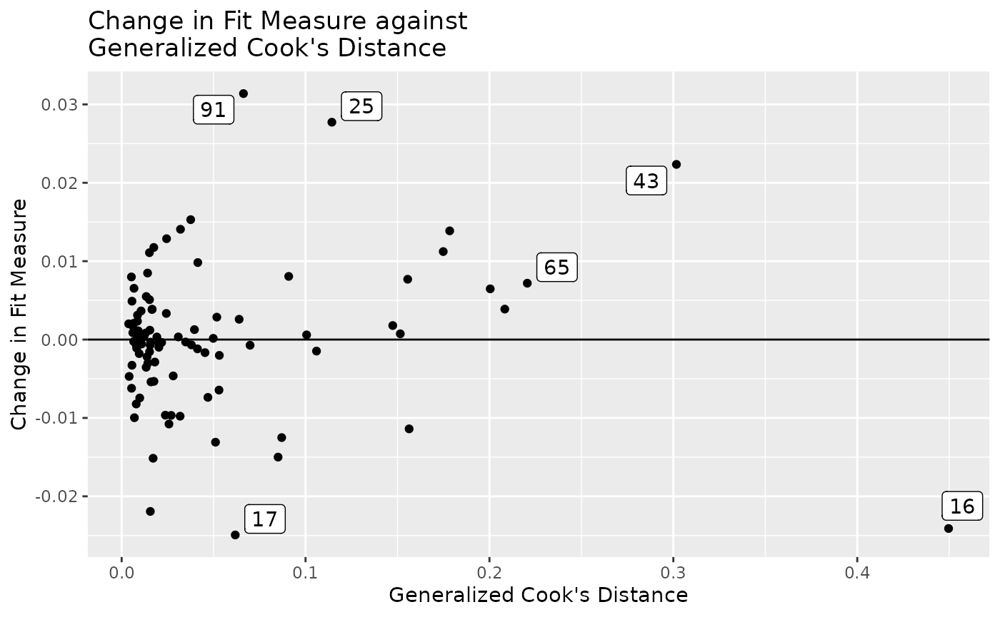
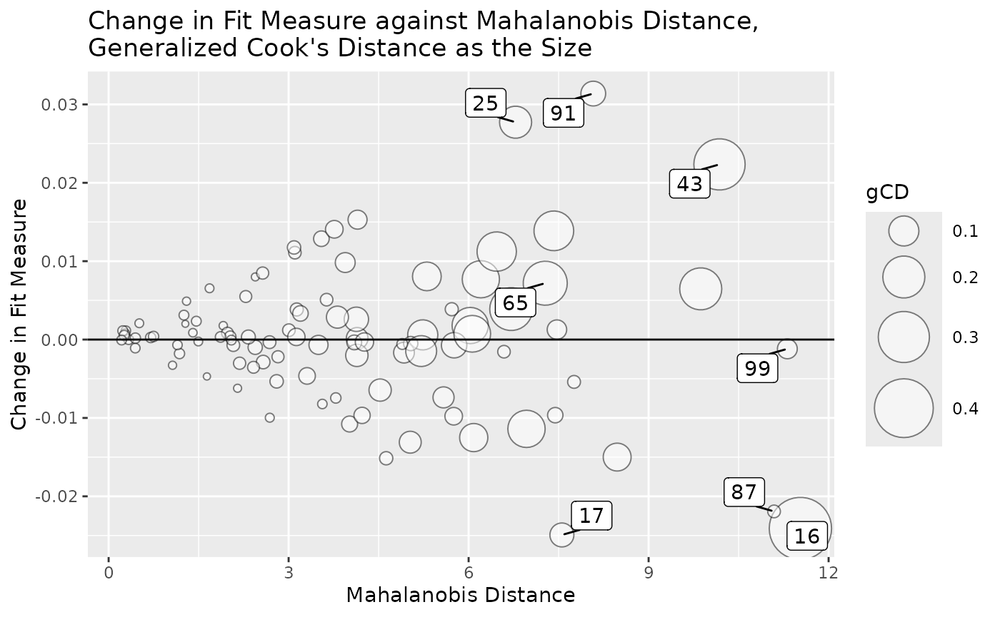
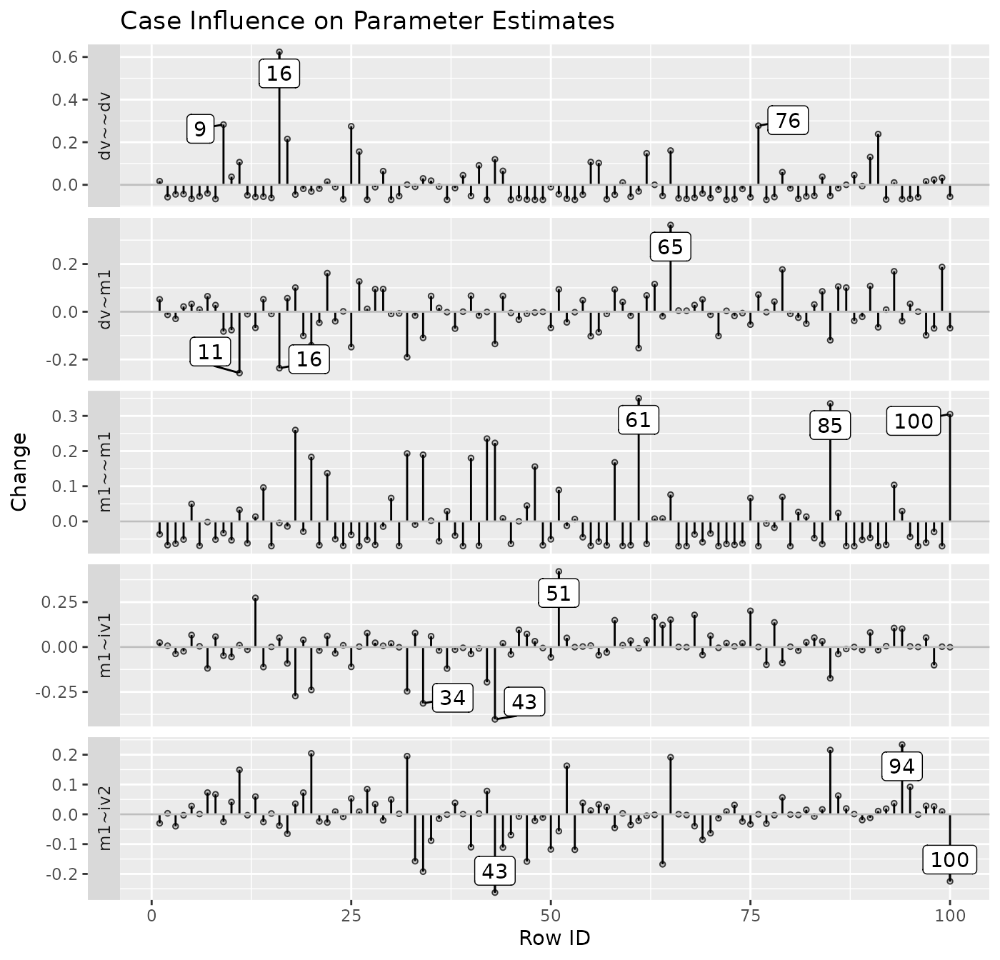
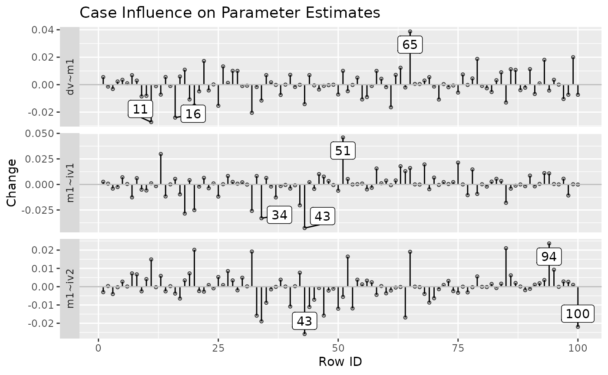
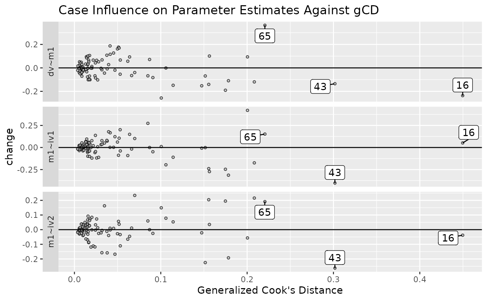
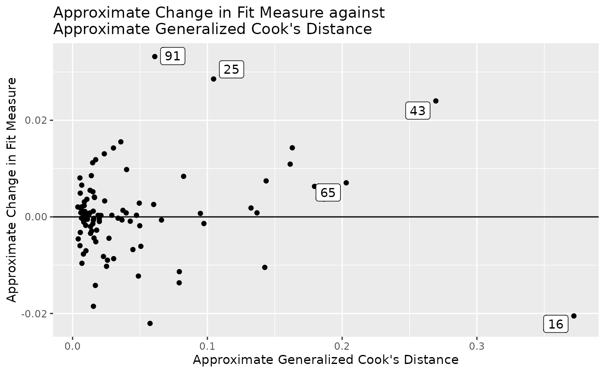
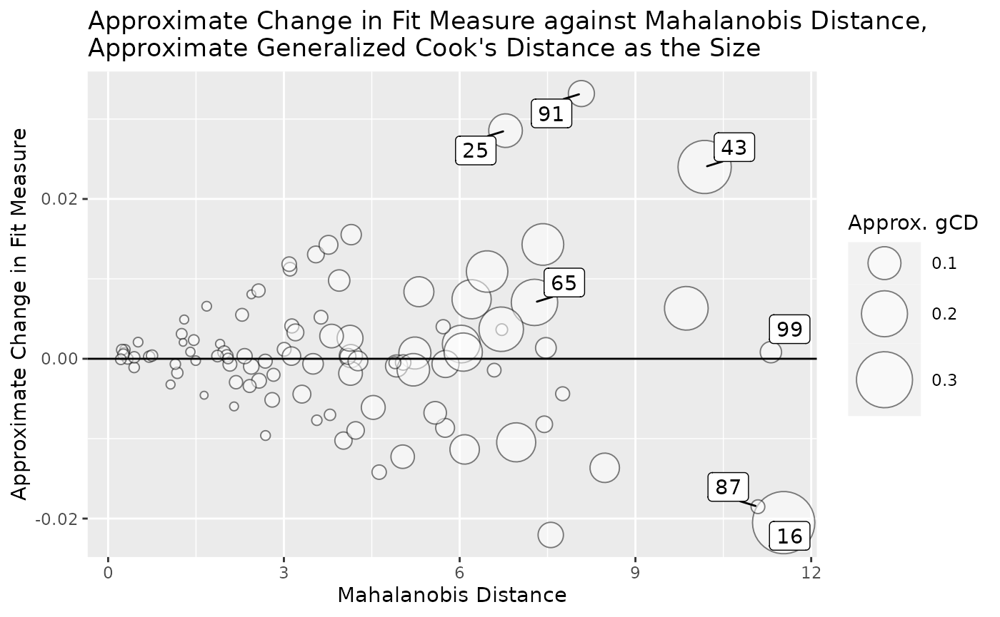
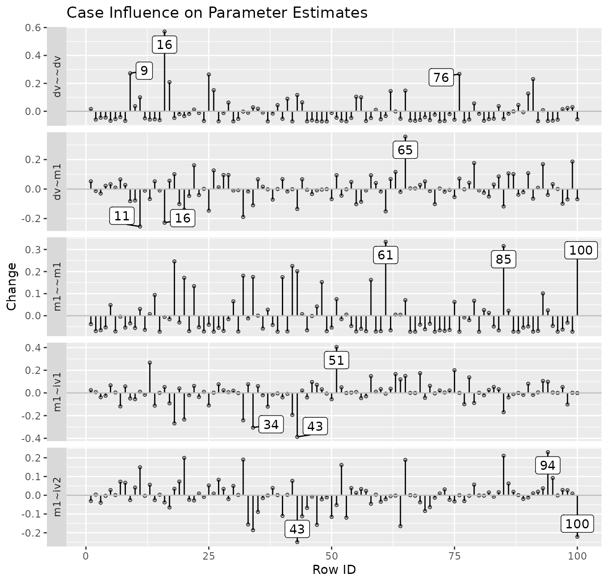

Purpose
The semfindr package contains functions for doing
structural equation modeling (SEM) diagnostics, such as identifying
influential cases and computing various diagnostic measures. This
document illustrates how to use semfindr to do casewise
sensitivity analysis: Assessing the influence of a case on parameter
estimates and model fit measures.
It supports two approaches: the leave-one-out approach presented by
Pek and MacCallum (2011), and the approximate approach that approximates
the influence of a case without refitting a model. It can generate some
plots based on similar plots available in the car package
by Fox and Weisberg (2019) for casewise sensitivity analysis.
Leave-One-Out Approach
Under this approach, for a case of concern, the model is fitted again without this case, and then results such as parameter estimates are compared. This approach is exact but can be time consuming because the model needs to be fitted again for each case under consideration.
Workflow
To remove the need to refit the model many times whenever a case
influence statistic is requested, semfindr adopts this
workflow:
Decide cases to examine. All cases will be examined, by default.
For each selected case, remove it and refit the model.
Store the results.
Any case influence statistics can then computed without the need to repeat Step 2.
Users can do as much diagnostic analysis as they want without repeating the time consuming refitting step. Step 2 can also be conducted without the need to decide in advance the influence statistics to compute. Some statistics, such as generalized Cook’s distance, is a function of the parameters selected, and the parameters to examine may depend on the results of other statistics and so may change during the analysis.
The following sections illustrates how to use the major functions.
Fitting the Target Model
The sample dataset is pa_dat, provided in the package,
with variables iv1, iv2, m1, and
dv, and 100 cases. For convenience, we assign
pa_dat to a new symbol, dat.
library(semfindr)
dat <- pa_dat
head(dat)
#> m1 dv iv1 iv2
#> 1 0.32067106 1.4587148 0.2055776 -0.42187811
#> 2 0.15360231 -0.3809220 0.1853543 0.15229953
#> 3 0.35136439 -0.4886773 0.9151424 1.16670950
#> 4 -0.56529330 -0.9766142 0.2884440 0.04563409
#> 5 -1.60657017 -1.0948066 -0.5756171 -0.18184854
#> 6 0.03143301 0.5859886 0.1420111 0.06286986Assume that the target model under examination is a path model with two predictors, one mediator, and one outcome variable:
mod <-
"
m1 ~ iv1 + iv2
dv ~ m1
"We fit the model by lavaan::sem():
Rerun n Times (Step 1 to Step 3)
We refit the model 100 times, each time with one case removed:
fit_rerun <- lavaan_rerun(fit)This example takes about 4 to 8 seconds. For larger samples or more
complicated models, lavaan_rerun() supports parallel
processing by setting parallel to TRUE.
lavaan_rerun() also supports selecting cases using the
Mahalanobis distance on all variables in the model or on the residuals
of outcome variables. See the help page of lavaan_rerun()
or vignette("selecting_cases", package = "semfindr") for
details.
If this process is slow, users can save the results by
base::saveRDS() such that users can load it for sensitivity
analysis later, without the need to repeat these steps in each R
session.
Diagnostic Functions
Standardized Changes in Parameter Estimates
One intuitive way to assess case influence is to compute the changes in parameter estimates if a case is included, with the changes standardized by their standard errors (Pek & MacCallum, 2011, Equation 7):
fit_est_change <- est_change(fit_rerun)
round(head(fit_est_change), 3)
#> m1~iv1 m1~iv2 dv~m1 m1~~m1 dv~~dv gcd
#> 1 0.024 -0.030 0.052 -0.037 0.017 0.006
#> 2 0.007 0.003 -0.013 -0.067 -0.058 0.008
#> 3 -0.038 -0.040 -0.030 -0.063 -0.045 0.010
#> 4 -0.024 -0.003 0.022 -0.051 -0.044 0.006
#> 5 0.067 0.028 0.033 0.050 -0.066 0.013
#> 6 0.004 0.001 0.010 -0.069 -0.054 0.008The standardized change is a measure of influence if a case is included. If the standardized change of a parameter for a case is positive, then including this case increase the estimate of this parameter.
For example, the standardized change of the path from
iv1 to m1 is 0.024 for the first case. The
estimates of this path with and without the first case are 0.215 and
0.212, respectively. The estimate of this path is larger when this case
is included than when this case is excluded. (Recall that 0.024 is the
change standardized by the standard error of the estimate).
est_change() also computes the generalized Cook’s
distance (Cook, 1977; Pek & MacCallum, 2011, Equation 6),
gCD (labelled in lowercase in the output as gcd),
using the parameters examined. gCD is analogous to Cook’s
distance in multiple regression. It measures the overall influence in
the parameters if a case is included.
Let’s examine the top five cases with largest gCD:
i <- order(fit_est_change[, "gcd"],
decreasing = TRUE)
i_top5 <- i[1:5]
round(fit_est_change[i_top5, ], 3)
#> m1~iv1 m1~iv2 dv~m1 m1~~m1 dv~~dv gcd
#> 16 0.052 -0.038 -0.237 -0.004 0.624 0.450
#> 43 -0.403 -0.263 -0.135 0.223 0.120 0.302
#> 65 0.152 0.191 0.363 0.076 0.161 0.221
#> 85 -0.174 0.216 -0.119 0.335 -0.052 0.208
#> 51 0.421 -0.057 0.094 0.089 -0.044 0.200Pek and MacCallum recommended computing generalized Cook’s distance
for subset of parameters that researchers would like to assess case
influence. This can be done by specifying the parameters to be included.
For example, we may compute the changes and the gCD only for
path coefficients, using the argument parameters:
fit_est_change_paths_only <- est_change(fit_rerun,
parameters = c("m1 ~ iv1",
"m1 ~ iv2",
"dv ~ m1"))
i <- order(fit_est_change_paths_only[, "gcd"],
decreasing = TRUE)
round(fit_est_change_paths_only[i[1:5], ], 3)
#> m1~iv1 m1~iv2 dv~m1 gcd
#> 43 -0.403 -0.263 -0.135 0.238
#> 51 0.421 -0.057 0.094 0.190
#> 65 0.152 0.191 0.363 0.189
#> 34 -0.314 -0.192 -0.109 0.142
#> 32 -0.247 0.195 -0.191 0.138If all paths are to be included, the following call will also work:
fit_est_change_paths_only <- est_change(fit_rerun,
parameters = c("~"))Although the 16th case has the largest gCD based on all parameters, the 43th case has the largest gCD based on regression paths only. Therefore, when examining gCD, it is better to compute it only for parameters that are theoretically important.
See the help page of est_change() for further
information.
Raw Changes in Parameter Estimates
The standardized changes in parameter may not be easy to interpret.
If the original units are interpretable, users can compute the
raw changes, that is, the changes in parameter estimates if a
case is included, not standardized by their standard errors. This can be
done by est_change_raw():
fit_est_change_raw <- est_change_raw(fit_rerun)
round(fit_est_change_raw[i_top5, ], 3)
#> m1~iv1 m1~iv2 dv~m1 m1~~m1 dv~~dv
#> 16 0.005 -0.004 -0.024 -0.001 0.108
#> 43 -0.043 -0.026 -0.014 0.028 0.022
#> 65 0.016 0.019 0.039 0.010 0.030
#> 85 -0.018 0.021 -0.013 0.041 -0.010
#> 51 0.046 -0.006 0.010 0.011 -0.008For example, the change of the path from iv1 to
m1 is -0.043 for the 43rd case. The estimate of this path
with and without the 43rd cases are 0.215 and 0.258, respectively. The
estimate with the 43rd case included is smaller than the estimate with
the 43rd case excluded. The raw changes is 0.215 - 0.258 or -0.043.
If desired, est_change_raw() can also compute the
changes in parameters in the standardized solution:
fit_est_change_raw_std <- est_change_raw(fit_rerun,
standardized = TRUE)
round(fit_est_change_raw_std[i_top5, ], 3)
#> m1~iv1 m1~iv2 dv~m1 m1~~m1 dv~~dv iv1~~iv1 iv1~~iv2 iv2~~iv2
#> 16 0.004 -0.004 -0.033 0.003 0.030 0 -0.002 0
#> 43 -0.032 -0.021 -0.013 0.026 0.012 0 0.024 0
#> 65 0.011 0.011 0.029 -0.016 -0.024 0 0.013 0
#> 85 -0.020 0.008 0.001 0.001 0.000 0 -0.007 0
#> 51 0.042 -0.010 0.011 -0.001 -0.009 0 -0.012 0Note that the variances of iv1 and iv2 are
necessarily equal to one in the standardized solution and so the raw
changes are equal to zero for all cases.
For example, these are standardized solutions of the full sample and the sample with the 43rd case removed:
standardizedSolution(fit, se = FALSE)[1, ]
#> lhs op rhs est.std
#> 1 m1 ~ iv1 0.178
standardizedSolution(sem(mod, dat[-43, ]), se = FALSE)[1, ]
#> lhs op rhs est.std
#> 1 m1 ~ iv1 0.21The change of the standardized estimate of the path from
iv1 to m1 is -0.032 for the 43rd case. The
standardized estimates of this path with and without the 43rd cases are
0.178 and 0.21, respectively. The estimate of the standardized
coefficient from iv1 to m1 is smaller than the
estimate with the 43rd case removed. The raw changes of standardized
estimate is 0.178 - 0.21 or -0.032.
est_change_raw() also supports computing the changes for
selected parameters:
fit_est_change_raw_std_paths <- est_change_raw(fit_rerun,
standardized = TRUE,
parameters = c("m1 ~ iv1",
"m1 ~ iv2",
"dv ~ m1"))
round(fit_est_change_raw_std_paths[i_top5, ], 3)
#> dv~m1 m1~iv1 m1~iv2
#> 16 -0.033 0.004 -0.004
#> 43 -0.013 -0.032 -0.021
#> 65 0.029 0.011 0.011
#> 85 0.001 -0.020 0.008
#> 51 0.011 0.042 -0.010If all parameters of the same operators are to be included, e.g.,
"~" for all regression paths, this form will also work:
fit_est_change_raw_std_paths <- est_change_raw(fit_rerun,
standardized = TRUE,
parameters = c("~"))See the help page of est_change_raw() for further
information.
Mahalanobis Distance
One commonly used measure for identifying outliers is Mahalanobis
distance (Mahalanobis, 1936; Pek & MacCallum, 2011, Equation 9).
mahalanobis_rerun() can be used to compute the Mahalanobis
distance of each case on all the variables used in the target model:
fit_md <- mahalanobis_rerun(fit_rerun)
round(fit_md[i_top5, , drop = FALSE], 3)
#> md
#> 16 11.530
#> 43 10.181
#> 65 7.277
#> 85 6.709
#> 51 9.869Note that a case with a large Mahalanobis distance is not necessarily an influential case (Pek & MacCallum, 2011). Therefore, if time allows, influence measures should be examined to avoid overlooking cases that are not extreme but are influential.
See the help page of mahalanobis_rerun() for further
information.
Changes in Fit Measures
Another intuitive measure of influence is the difference in a measure
of model fit between the analysis with a case included and that with the
case excluded. This can be done by fit_measures_change(),
which simply gets any fit measures supported by
lavaan::fitMeasures() from the results from
lavaan_rerun:
fit_mc <- fit_measures_change(fit_rerun,
fit_measures = c("chisq", "cfi", "tli", "rmsea"))
round(fit_mc[i_top5, ], 3)
#> chisq cfi tli rmsea
#> 16 -1.533 0.019 0.048 -0.024
#> 43 1.306 -0.030 -0.075 0.022
#> 65 0.474 0.002 0.004 0.007
#> 85 0.280 -0.004 -0.011 0.004
#> 51 0.432 -0.005 -0.012 0.006The value is computed by \(M_\textrm{full sample} - M_\textrm{one case removed}\). Therefore, if the value for a case is positive, the measure is higher when this case is included than when this case is excluded. If the value is negative, the measure is smaller when this case is included than when this case is excluded. This convention is selected such that the interpretation is consistent with that for changes in parameter estimates.
For example, the change in CFI for the 43rd case is -0.03. Therefore, including the 43rd Case yields a CFI smaller than when this case is exclude, and the difference is 0.03.
The argument fit_measures is passed to
lavaan::fitMeasures() to specify the measures to be
computed. The default values are
c("chisq", "cfi", "tli", "rmsea"). Therefore, this argument
can be omitted if they are the desired measures of fit:
fit_mc <- fit_measures_change(fit_rerun)See the help page of fit_measures_change() for further
information.
An All-In-One-Function
We can also use influence_stat() to compute the previous
measures. It calls fit_measures_change(),
est_change(), and mahalanobis_rerun() (if
requested) and then merges their results into one matrix:
fit_influence <- influence_stat(fit_rerun)
round(fit_influence[i_top5, ], 3)
#> chisq cfi rmsea tli m1~iv1 m1~iv2 dv~m1 m1~~m1 dv~~dv gcd md
#> 16 -1.533 0.019 -0.024 0.048 0.052 -0.038 -0.237 -0.004 0.624 0.450 11.530
#> 43 1.306 -0.030 0.022 -0.075 -0.403 -0.263 -0.135 0.223 0.120 0.302 10.181
#> 65 0.474 0.002 0.007 0.004 0.152 0.191 0.363 0.076 0.161 0.221 7.277
#> 85 0.280 -0.004 0.004 -0.011 -0.174 0.216 -0.119 0.335 -0.052 0.208 6.709
#> 51 0.432 -0.005 0.006 -0.012 0.421 -0.057 0.094 0.089 -0.044 0.200 9.869One major use of influence_stat() is to provide
information for the diagnostic plots introduced below.
Diagnostic Plots
semfindr provides several functions to generate
diagnostic plots. All these functions accept an output of
influence_stat() and returns a ggplot2 plot,
which can be further customized if desired by other ggplot2
functions.
Generalized Cook’s Distance
To visualize the gCDs of cases, we can plot an index plot
with cases on the horizontal axis and the gCD on the vertical
axis using gcd_plot():
gcd_plot(fit_influence,
largest_gcd = 3)The plot shows that, compared to other cases, the 16th case has the largest gCD (based on all free parameters).
largest_gcd controls the number of cases with the
largest gcd to be labelled. The default is 1.
More options of gcd_plot() can be found on its help
page.
Mahalanobis Distance
An index plot can be computed on the Mahalanobis distance given by
influence_stat():
md_plot(fit_influence,
largest_md = 3)This plot illustrates that, although the 87th and 99th cases are also large on Mahalanobis distance, they are not influential cases when assessed by gCD.
largest_m is used to control how many cases with high
Mahalanobis distance on all the variables in the fitted model will be
labelled. The default is 1.
More options for md_plot() can be found on its help
page.
Change in Fit Measure vs. Generalized Cook’s Distance
To examine how gCD relates to a selected measure of model
fit (gof), gcd_gof_plot() can be used:
gcd_gof_plot(fit_influence,
fit_measure = "rmsea",
largest_gcd = 3,
largest_fit_measure = 3)
largest_gcd determines the number of cases with largest
gcd to be labelled, and largest_fit_measure
determines the number of cases with largest absolute change in
the selected measure of model fit to be labelled. The default is 1 for
both arguments.
More options of gcd_gof_plot() can be found on its help
page.
Bubble Plot
The function gcd_gof_md_plot() can be used to plot a
bubble plot of a selected measure of model fit against Mahalanobis
distance, with the bubble size determined by generalized Cook’s
distance. This plot is similar to the plot by
car::influencePlot() for regression models.
gcd_gof_md_plot(fit_influence,
fit_measure = "rmsea",
largest_gcd = 3,
largest_fit_measure = 3,
largest_md = 3,
circle_size = 15)
circle_size controls the size of the largest bubble.
Increase this number when the size difference is too small between
bubbles. largest_gcd, largest_fit_measure, and
largest_md controls the number of cases with highest
absolute values one the these measures to be labelled. Their default
values are 1.
More options of gcd_gof_md_plot() can be found from its
help page.
Index Plot of Standardized or Raw Changes in Parameter Estimates
The function est_change_plot() can be used to plot an
index plot of standardized or raw changes using the output of
est_change() or est_change_raw().
For example, using the output generated by est_change()
above, it can generate an index plot for each parameter:
est_change_plot(fit_est_change,
largest_change = 3)
largest_change controls the number of cases with the
largest change to be labelled. The default is 1. The cases to be
labelled is determined separately for each parameter.
The function also supports plotting the changes only for selected
parameters, using parameters:
est_change_plot(fit_est_change,
parameters = "~",
largest_change = 3)
It can also plot the raw changes. For example:
est_change_plot(fit_est_change_raw,
parameters = "~",
largest_change = 3)More options of est_change_plot() can be found on its
help page.
Standardized Changes Against gCD
The function est_change_gcd_plot() can be used to plot,
for each selected parameter, casewise standardized changes using the
output of est_change() against gCD.
For example, using the output generated by est_change()
above, it can generate an index plot for each parameter:
est_change_gcd_plot(fit_est_change,
largest_gcd = 3)
largest_gcd controls the number of cases with the
largest gCD to be labelled. The default is 1.
The function also supports plotting the changes only for selected
parameters, using parameters:
est_change_gcd_plot(fit_est_change,
parameters = "~",
largest_gcd = 3)
It does not support plotting the raw changes against gCD
because gCD is not computed by
est_change_raw().
More options of est_change_gcd_plot() can be found on
its help page.
Approximate Approach
The leave-one-out approach is exact because the model is fitted
twice, with and without the target case. However, this can be time
consuming for some models and datasets. The semfindr
package also supports the approximate approach that uses casewise scores
(from lavaan::lavScores()) and casewise likelihood to
approximate the influence of a case without refitting a model.
This approach is not exact but is much faster than the leave-one-out
approach because the model is not fitted again.
This approach can be used together with the leave-one-out approach, using the approximate approach to identify potentially influential cases and then use the leave-one-out approach to compute the exact influence.
Most the functions for the leave-one-out approach has their
approximate approach counterparts. Therefore, only their usage will be
illustrated here. Please refer to the previous section on the meanings
of the influence statistics. The major difference is, all functions for
the approximate approach use the output of lavaan directly.
There is no need to use lavaan_rerun().
For the technical details on the approximate approach, please refer
to the vignette Approximate Case Influence Using Scores and Casewise
Likelihood
(vignette("casewise_scores", package = "semfindr")).
Diagnostic Functions
Approximate Standardized Changes in Parameter Estimates
The function est_change_approx() can be used to compute
the approximate standardized change. The first argument is the output of
lavaan:
fit_est_change_approx <- est_change_approx(fit)
round(head(fit_est_change_approx), 3)
#> m1~iv1 m1~iv2 dv~m1 m1~~m1 dv~~dv gcd_approx
#> 1 0.025 -0.030 0.052 -0.038 0.016 0.006
#> 2 0.007 0.003 -0.013 -0.069 -0.060 0.008
#> 3 -0.038 -0.040 -0.030 -0.065 -0.046 0.010
#> 4 -0.024 -0.003 0.022 -0.053 -0.045 0.006
#> 5 0.067 0.028 0.033 0.049 -0.068 0.013
#> 6 0.004 0.001 0.010 -0.071 -0.056 0.008The column gcd_approx indicates that the gCD is
only an approximate value.
Like est_change(), it also supports computing the
approximate gCD based on selected parameters. For example, the
following computes the gCD based on regression coefficients
only:
fit_est_change_approx_paths <- est_change_approx(fit,
parameters = "~")
round(head(fit_est_change_approx_paths), 3)
#> m1~iv1 m1~iv2 dv~m1 gcd_approx
#> 1 0.025 -0.030 0.052 0.004
#> 2 0.007 0.003 -0.013 0.000
#> 3 -0.038 -0.040 -0.030 0.004
#> 4 -0.024 -0.003 0.022 0.001
#> 5 0.067 0.028 0.033 0.006
#> 6 0.004 0.001 0.010 0.000See the help page of est_change_approx() for further
information.
Approximate Raw Changes in Parameter Estimates
The function est_change_raw_approx() computes the
approximate raw changes of parameter estimates, not standardized by
their standard errors. The first argument is the output of
lavaan:
fit_est_change_raw_approx <- est_change_raw_approx(fit)
round(fit_est_change_raw_approx[i_top5, ], 3)
#> m1~iv1 m1~iv2 dv~m1 m1~~m1 dv~~dv
#> 16 0.005 -0.004 -0.024 -0.001 0.106
#> 43 -0.040 -0.025 -0.014 0.025 0.022
#> 65 0.016 0.019 0.037 0.009 0.027
#> 85 -0.018 0.021 -0.012 0.040 -0.010
#> 51 0.042 -0.005 0.010 0.009 -0.009Unlike est_change_raw(),
est_change_raw_approx() does not support raw changes in the
standardized solution.
See the help page of est_change_raw_approx() for further
information.
Mahalanobis Distance
The function mahalanobis_rerun() actually does not need
the leave-one-out approach. Therefore, it can also be used in the
approximate approach by setting the first argument to the output of
lavaan:
fit_md <- mahalanobis_rerun(fit)
round(fit_md[i_top5, , drop = FALSE], 3)
#> md
#> 16 11.530
#> 43 10.181
#> 65 7.277
#> 85 6.709
#> 51 9.869The results are the same whether the output of lavaan or
lavaan_reun() is used.
Approximate Changes in Fit Measures
The function fit_measures_change_approx() computes the
approximate changes in selected fit measures. The first argument is the
output of lavaan:
fit_mc_approx <- fit_measures_change_approx(fit,
fit_measures = c("chisq", "cfi", "tli", "rmsea"))
round(fit_mc_approx[1:5, ], 3)
#> chisq cfi tli rmsea
#> 1 0.160 -0.002 -0.005 0.002
#> 2 -0.019 0.001 0.003 -0.001
#> 3 -0.389 0.008 0.019 -0.007
#> 4 -0.151 0.004 0.009 -0.003
#> 5 0.097 0.000 0.001 0.001These measures are the default values. Therefore, if only these four measures are needed, the following will also work:
fit_mc_approx <- fit_measures_change_approx(fit)See the help page of fit_measures_change_approx() for
further information.
An All-In-One-Function
The all-in-one function influence_stat() can be used to
compute approximate influence statistics by calling
fit_measures_change_approx() and
est_change_approx(). This can be done simply by using the
output of lavaan as the first argument:
fit_influence_approx <- influence_stat(fit)
round(fit_influence_approx[1:5, ], 3)
#> chisq cfi rmsea tli m1~iv1 m1~iv2 dv~m1 m1~~m1 dv~~dv gcd_approx
#> 1 0.160 -0.002 0.002 -0.005 0.025 -0.030 0.052 -0.038 0.016 0.006
#> 2 -0.019 0.001 -0.001 0.003 0.007 0.003 -0.013 -0.069 -0.060 0.008
#> 3 -0.389 0.008 -0.007 0.019 -0.038 -0.040 -0.030 -0.065 -0.046 0.010
#> 4 -0.151 0.004 -0.003 0.009 -0.024 -0.003 0.022 -0.053 -0.045 0.006
#> 5 0.097 0.000 0.001 0.001 0.067 0.028 0.033 0.049 -0.068 0.013
#> md
#> 1 1.911
#> 2 0.444
#> 3 3.787
#> 4 1.065
#> 5 1.980See the help page of influence_stat() for further
information.
Diagnostic Plots
All the diagnostic plot functions can also be used to visualize case
influence statistics based of the approximate approach. The method used
will be determined by the output of influence_stat(),
est_change_approx(), and
est_change_raw_approx() and users use them in exactly the
same way as for the leave-one-out approach. Therefore, only sample code
is presented below, using the output of influence_stat(),
est_change_approx(), and
est_change_raw_approx() based on the approximate approach
generated in the previous section.
Note that all the plots noted in the titles and axis labels that the statistics are approximate values.
Mahalanobis Distance
md_plot(fit_influence_approx,
largest_md = 3)This plot is the same for both the leave-one-out approach and the approximate approach.
Approximate Change in Fit Measure vs. Approximate Generalized Cook’s Distance
gcd_gof_plot(fit_influence_approx,
fit_measure = "rmsea",
largest_gcd = 3,
largest_fit_measure = 3)
Bubble Plot
gcd_gof_md_plot(fit_influence_approx,
fit_measure = "rmsea",
largest_gcd = 3,
largest_fit_measure = 3,
largest_md = 3,
circle_size = 15)
Index Plot of Standardized or Raw Changes in Parameter Estimates
est_change_plot(fit_est_change_approx,
largest_change = 3)
est_change_plot(fit_est_change_approx,
parameters = "~",
largest_change = 3)
est_change_plot(fit_est_change_raw_approx,
parameters = "~",
largest_change = 3)
Standardized Changes Against gCD
est_change_gcd_plot(fit_est_change_approx,
largest_gcd = 3)Note largest_gcd controls the number of cases with the
largest approximated gCD to be labelled. The default
is 1.
est_change_gcd_plot(fit_est_change_approx,
parameters = "~",
largest_gcd = 3)
Final Remarks
The examples above use row numbers to identify cases. If users have
meaningful case IDs, they can be used to label case ( see
vignette("user_id", package = "semfindr")). If users want
to refit the model only with selected cases removed one-by-one,
lavaan_rerun() supports various methods to examine only
selected cases (see
vignette("selecting_cases", package = "semfindr")).
Last, all the plot functions return ggplot graph
objects. Users can further modify them to suit their needs. They also
have *_aes arguments that can be used to customize the plot
generated. Please see their help pages on how to use these
arguments.
References
Cook, R. D. (1977). Detection of influential observation in linear regression. Technometrics, 19(1), 15-18.
Fox J., & Weisberg, S. (2019). An R companion to applied regression (3rd Edition). Sage. https://socialsciences.mcmaster.ca/jfox/Books/Companion/.
Mahalanobis, P. C. (1936). On the generalized distance in statistics. Proceedings of the National Institute of Science of India, 2, 49-55.
Pek, J., & MacCallum, R. (2011). Sensitivity analysis in structural equation models: Cases and their influence. Multivariate Behavioral Research, 46(2), 202-228. https://doi.org/10.1080/00273171.2011.561068